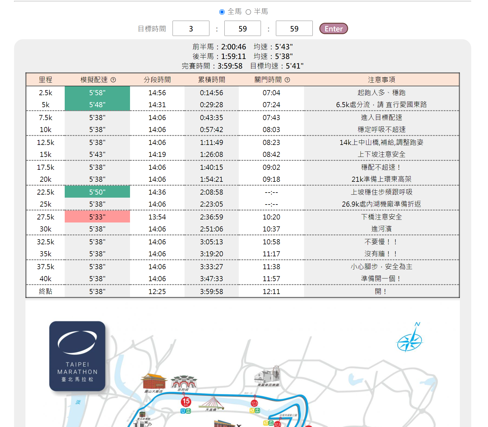

2021台北馬配速模擬計算機
常見的馬拉松配速計算機鮮少針對賽道地形、人潮擁擠做調整，導致單純里程除以時間的結果只能淪為參考用，一味追配速最後的結果就是跑爆!!!😵😵😵
希望有一個工具可以針對賽道狀況，告訴我
「甚麼時候要上坡、甚麼時候可以快一點、甚麼時候慢一點沒關係」
只要照著跑，就能順順地在目標時間內完賽
此為本專案最一開始的初衷。

使用說明
- 於計算機首頁選擇全馬/半馬
- 輸入目標完賽時間，點擊enter按鈕
- 產生配速模擬表格：搭配下方地圖對照查看，熟悉路線做好心理準備！
- 配速調整醒目提示：與目標均速相比太快或太慢的區段，給予醒目提示。
- 點選❤️製作配速手環❤️或是清除重來
開發邏輯
- 剛好能在目標完賽時間完賽為目標
- 將人潮擁擠、上下橋的速度變化納入考量
- 避免爆掉,配速大致平均
- 設定的完賽策略是前半馬稍慢後半馬稍快
- 每站皆有預留進站喝水的時間
蒐集所有台北馬拉松的注意事項，要「做功課」看這裡就對啦!
本工具根據台北馬賽道狀況，做配速調整，還可以自製配速手環!!!
如果你是馬拉松新手，這個工具可以幫你減輕一些負擔😊
三大重點功能
- 配速計算機 輸入目標完賽時間，產生配速建議
- 製作配速手環 自動代入結果，可直接列印使用
- 比賽資訊蒐集 路線介紹、關門時間、補給策略整理
特色
-
好實用
配速根據賽道狀況調整，避免為了追配速把自己搞爆 -
好貼心
配合水站/補給，每2.5K顯示配速時間，進站時確認即可 -
好細緻
根據不同完賽時間，設定不同的配速調整參數 -
好漂釀
依照模擬結果，自製精美配速手環❤️ -
好佛心
免費工具、無廣告 -
好懶人
保留前次輸入內容，無須重複輸入(沒有傳送任何資料!)
本專案前身為「貓女姊姊的台北馬配速計算機excel版」
感謝她找我一起參與這個專案的開發
討論過程中產生了不少創意,也謝謝她放手讓我在過程中自由發揮
Shout out to 貓女姊姊 沒有她就沒有這個專案!!!
賽前滿心期待地做功課、設定配速，卻擔心實際執行成效不彰嗎？想要輕鬆掌握 配速、 進站時機、吃膠提醒、關門時間，你需要的是配速手環!!💪
操作說明
- 於計算機首頁選擇全馬/半馬
- 輸入目標完賽時間，點擊enter按鈕
- 滑到最下面點選❤️製作配速手環❤️
- 自動產生pdf檔案供下載(如無反應請使用chrome瀏覽器喔~)
- 寫下個人提醒、護貝或是用膠帶雙面黏貼
就是這麼簡單!
對市民跑者而言，跑步除了享受比賽當下之外，賽前做功課、研究賽道、制訂計劃然後執行，都是過程中充滿樂趣的一部份。
戴上配速手環，比賽的時候會有種安心的感覺吧
這是我們的期許😊😊😊
注意事項
- 身體需要時間反應，上中山橋前就要提前補給！
(全馬14k處上橋；半馬12k處上橋) - 等到身體渴了才喝水就來不及了
- 建議每站都補給，一站水、一站運動飲料交替喝
影片
- 如何邊跑邊喝水、台北馬補給備戰 (來源: 佛系跑步Kobe麒)
Copyright © 2021 小M平